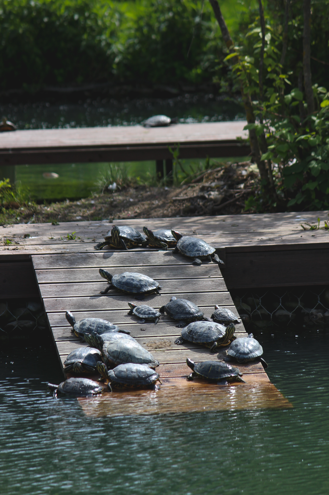
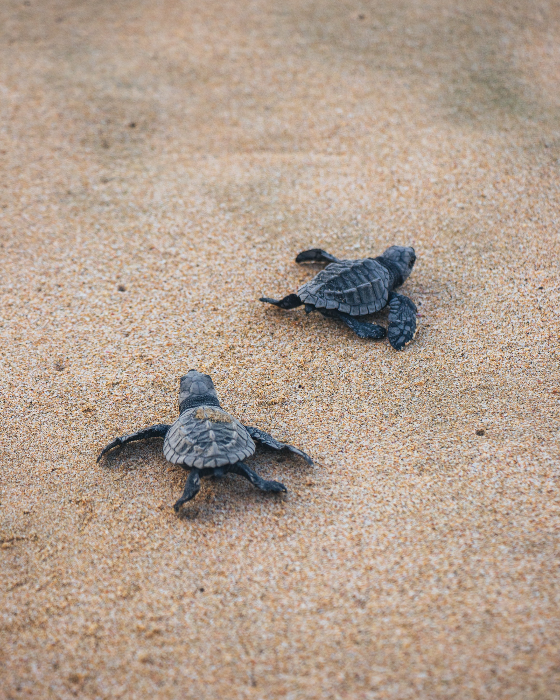

SRI LANKAN TURTLE POPULATION

Sri Lanka is home to many endangered species, including sea turtles. Sea turtle hatcheries are commonly seen on Sri Lanka’s western and southern coasts.
The hatcheries along Sri Lanka’s western coast regularly witnesses a good count of sea turtles. Swimming all their way through the mighty Indian Ocean, the Sea Turtles reach hatcheries during their hatching period.
IMPORTANCE OF TURTLE HATCHERIES

- Defending turtle nests from theft: Turtle eggs are a valuable resource that are frequently stolen for sale or eating. These nests are protected by turtle hatcheries, which also make sure that the eggs are allowed to naturally hatch.
- Supporting the recovery of turtle populations: Due to human activities including habitat degradation, pollution, and poaching, many turtle species are vulnerable or endangered. Hatcheries aid in the rehabilitation of turtle populations by offering a secure habitat for hatchlings to grow and develop.
- Public education: To increase awareness of the significance of sea turtle protection, turtle hatcheries in Sri Lanka frequently provide educational programs or create visitor centers. This contributes to the education of both residents and visitors on the significance of conserving turtle populations.
- Rehabilitating ill or wounded turtles: Some hatcheries additionally provide care for sick or injured turtles, which improves their chances of survival and helps the population as a whole.
- Numerous hatcheries in Sri Lanka also keep track on turtle populations' movements and habits and do study on their numbers. Decisions on management and conservation are informed by this knowledge.
SUCCESS STORIES
The protection of sea turtle populations has benefited greatly from the work of Sri Lankan turtle hatcheries.
To safeguard the sea turtle population on Sri Lanka's southern coast, the Rekawa Turtle Conservation Project was started in 1996. In the project's hatchery, eggs are safeguarded before being released along with their hatchlings. The project's efforts have led to a large rise in the quantity of sea turtle nests on the beach over time.
Sea Turtle Farm and Hatchery at Habaraduwa was founded in 1986. Eggs from fragile nests are collected by the hatchery, where they are kept safe until hatching. After that, the hatchlings are released into the sea. Over 4 million hatchlings have been released from the hatchery into the ocean, making a substantial contribution to the rehabilitation of sea turtle populations in Sri Lanka.
To save marine turtles and their eggs, the Madu River Turtle Hatchery was founded in 1996. The hatchery offers a secure setting for eggs to molt and for young animals to develop until they are ready to be released into the ocean. Over the years, the hatchery has successfully released tens of thousands of hatchlings into the ocean, aiding in the sea turtle species' comeback.

IMPACT OF TOURISM ON TURTLE HATCHERIES
The local economy and turtle hatcheries in Sri Lanka are both impacted by tourism, both favorably and unfavorably. The following are some ways that tourism influences turtle hatcheries and the neighborhood:
POSITIVES
- Increased income: Entrance fees are sometimes charged in Sri Lankan turtle hatcheries, which brings in money for the facility and local communities.
- Education and public awareness: Tourists that visit the sea turtle hatcheries frequently learn about the conservation efforts being made to preserve the species and its environment.
- As tourism grows, hatcheries need more workers to handle the surge of visitors, which opens up job prospects for the neighborhood.
NEGATIVES
- Overcrowding: Large numbers of visitors may lead to overcrowding at the hatcheries, which may have an impact on the turtles' welfare and visitors' experiences.
- Tourists may disrupt nesting turtles by approaching too closely or using flash photography, which may cause the turtles to become disoriented and prevent them from returning to the beach.
- Unsustainable activities: Some hatcheries may employ unsustainable tactics, such as gathering more eggs than required or housing turtles in subpar circumstances, in order to satisfy the needs of visitors.